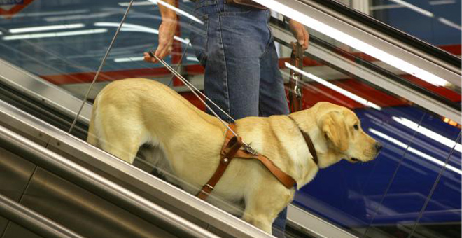
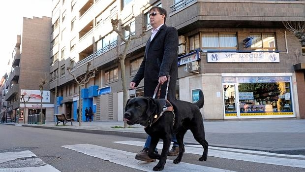
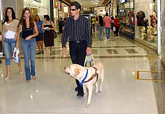
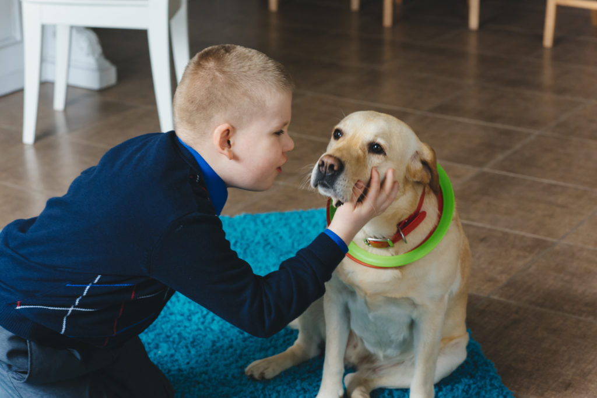
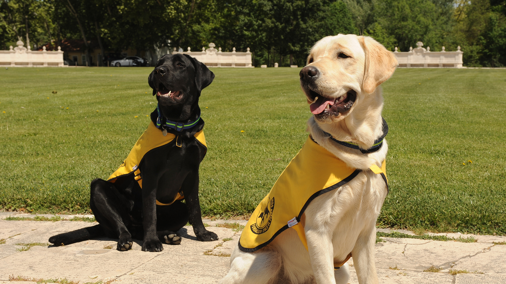

Al colaborar con nosotros podrás facilitar al futuro perro guía a introducirse en lo que será su día a día:
- Facilitar la entrada al transporte público
- Subir en escaleras mecánicas
- Guiar en los pasos de cebra
- Evitar obstaculos en la acera
- Asisten a personas con autismo






>